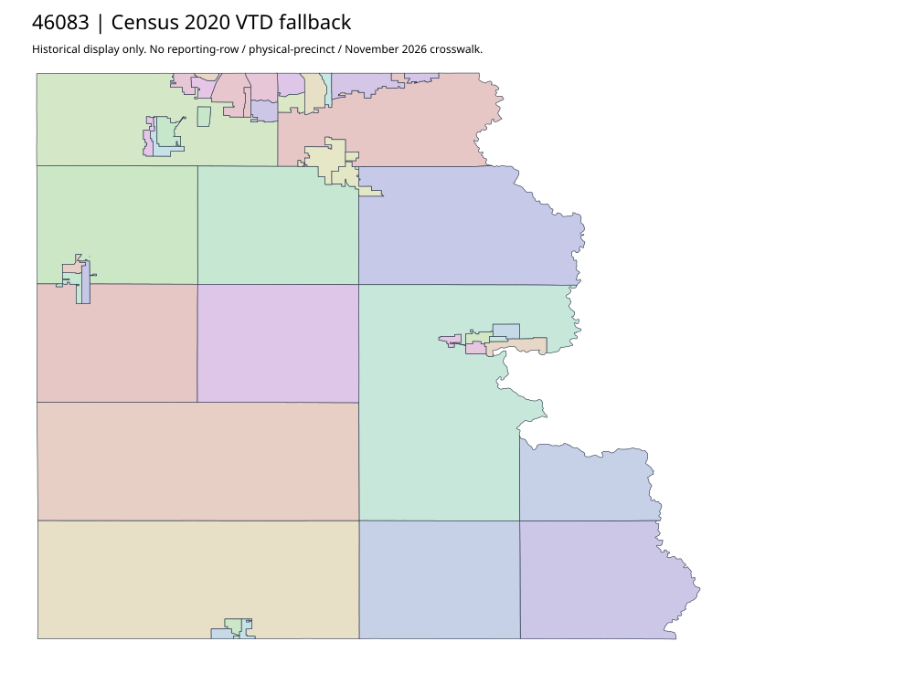

304 ordered indexLincoln | 46083
Official current Elections parent and its literal982 link now return a complete polling-place precinct roster; original preparation404/empty access evidence stays separate. The separate783 active-voter summary is registration, not geometry or turnout. GIS/property parents do not establish an acquired precinct polygon layer. Census2020 fallback40 units remains unjoined.
31 priority / 32 full historical observations. Parent is a summary ancestor, not additive to leaves. No physical feature matches or current reporting crosswalk approved.
Acquired shared-parent assets
No complete county precinct-map original acquired from this bounded chain. Use qualified fallback; roster/landing/error bodies are retained as evidence.
Administrative/district supplement (not a precinct polygon match): bounded-final-46083
Administrative/district supplement (not a precinct polygon match): map-46083-016-network
Census2020 fallback
40 native historical VTD features. Entire785-feature ZIP original retained once, all66 counties. Yankton has one countywide VTD. No current/reporting allocation. complete original gzip

Full binary/attribute/geometry QA
Observed authority/acquisition routes
Complete SOS authority fields including original blank/masked values: parent inventory. No contacts were sent.
Ordered full children
- Sioux Falls 2-16 | 2792 source votes | priority
- Sioux Falls 2-13 | 2368 source votes | priority
- Sioux Falls 2-11 | 2236 source votes | priority
- 27 | 1849 source votes | priority
- Sioux Falls 2-10 | 1728 source votes | priority
- 29 | 1663 source votes | priority
- Sioux Falls 1-18 | 1660 source votes | priority
- Sioux Falls 1-11 | 1653 source votes | priority
- Sioux Falls 2-15 | 1479 source votes | priority
- Sioux Falls 1-12 | 1413 source votes | priority
- 15 | 1282 source votes | priority
- Sioux Falls 1-14 | 1162 source votes | priority
- 16 | 1158 source votes | priority
- 25 | 1157 source votes | priority
- 24-01 | 1067 source votes | priority
- 20 | 1046 source votes | priority
- 24-02 | 1013 source votes | priority
- Sioux Falls 1-15 | 970 source votes | priority
- Sioux Falls 2-12 | 918 source votes | priority
- 24-03 | 870 source votes | priority
- Sioux Falls 1-16 | 824 source votes | priority
- Sioux Falls 1-20 | 782 source votes | priority
- 23-13 | 778 source votes | priority
- Sioux Falls 1-13 | 763 source votes | priority
- 13-14 | 535 source votes | priority
- 02-21 | 520 source votes | priority
- 30 | 507 source votes | priority
- 06 | 504 source votes | priority
- 26 | 502 source votes | priority
- 12 | 485 source votes | priority
- 11-14 | 463 source votes | priority
- 08 | 246 source votes | remainder